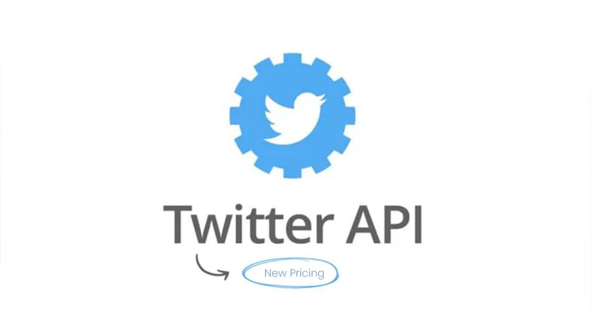
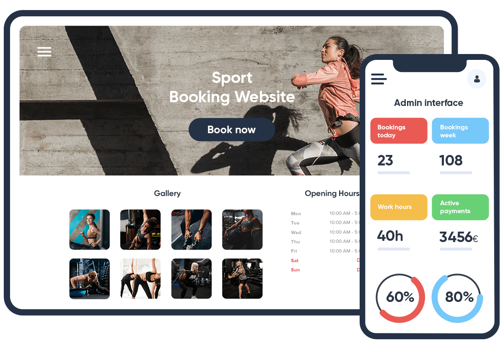

April 25, 2023
Utilized ML techniques on a dataset of 253,680 survey responses to predict diabetes health indicators. Achieved 85% accuracy using logistic regression, random forest, and ANN models. Conducted feature selection, K-fold cross-validation, and data visualization for enhanced evaluation and insights. Demonstrated expertise in data preprocessing, feature selection, and predictive modeling for diabetes health indicators.
Performed data cleaning, preprocessing, and visualization (boxplot, histogram) in R. Conducted hypothesis testing and developed a linear regression model to analyze student performance factors. Demonstrated proficiency in data analysis, preprocessing, visualization, and statistical modeling for educational insights.
This involves classifying fake news. Worked on a dataset of news articles during 2016 election • Classification Of fake news using various ML models such as KNN, Naive Bayes, SVM, Decision tree. Compared their accuracy, latency, and different matrices. Achieved accuracy of 84%. Also explored different approaches for fake news classification using deep neural networks and transformers.

Extract data from Twitter API using TweePy, pre-processed text and word embedded. Compared different methods for text- embedding and identified the best approach. Achieved an accuracy of 92%. Did sentiment analysis of each tweet and identified use- cases of the system. Part of seminar work and got A+ grade.

Designed Prototype of website using Django and Flask framework with PostgreSQL for database design. Create Dashboards for calculating sports resistivity for athletes in India based on gathered data.